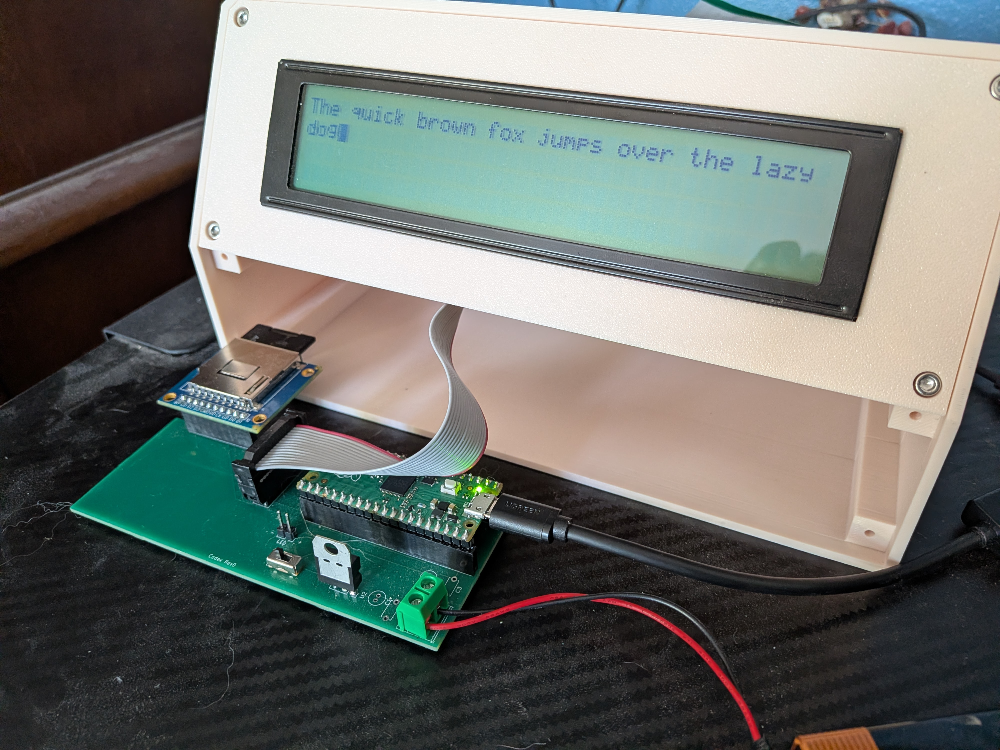
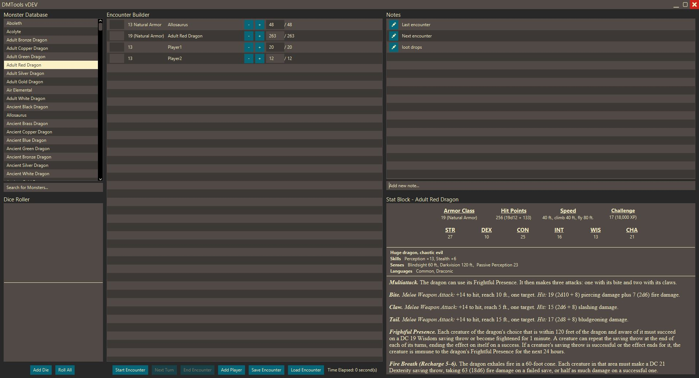
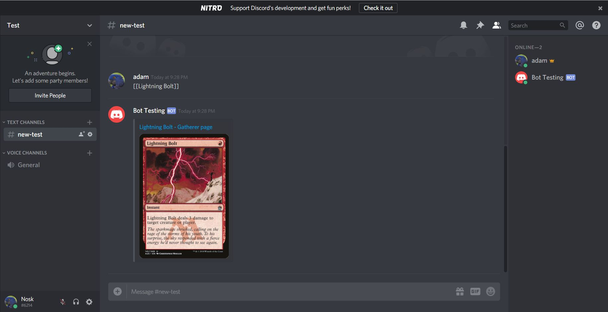
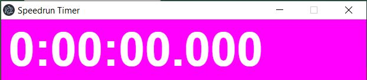
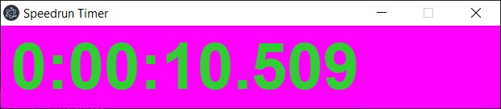
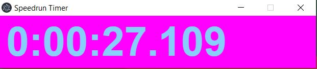
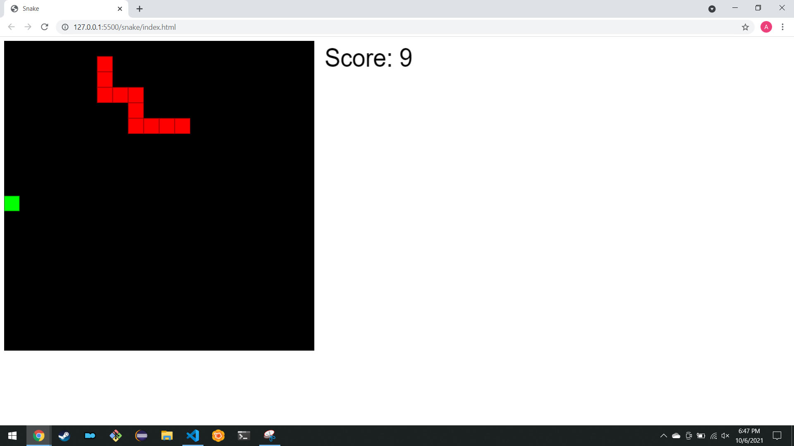

The Codex text editor is an attempt at a distraction-free writing device, built around a Raspberry Pi Pico for a relatively affordable price-point. It is inspired by the AlphaSmart Neo, a similar device that was popular in the early 2000s. The Codex is open source, and you can follow along with the progress the dedicated page.
The idea behind this project was to create an affordable(ish) writing device. The primary contenders in this area are the FreeWriteand the BYOK. The FreeWrite is a great device, but is quite expensiveat around $500. Furthermore, there are those who don't like the E-ink display, which can be slow to refresh. The BYOK is a much more affordable option, but is closed source. The Codex is an attempt to create an affordable, open source alternative to these devices.
This project began because I was a big fan of the Nixie Watch by Cathode Corner. However, I couldn't justify the $500 price tag, so I decided to do the next best thing: build my own.
The watch is built around an ATMega328 microcontroller, and it uses a 7-segment display to show the time. It is powered with a CR2 battery (like the Nixie Watch), and uses an IMU to detect when the watch is being looked at. For more information about the design decisions, build process, and build history, check out the dedicated project page linked below.

This is an application written in Java, with the JavaFX framework. It is a tool that is meant to help dungeon masters run a game of Dungeons & Dragons (or other D20-baesd game) more easily. It has a monster lookup that interfaces with an sqlite database (that you can create yourself from scratch, following theprovided schema, or utilize the provided one that only contains information from the SRD). It also has a dice roller, an encounter builder that you can build from scratch using the monster database or by manual input, and then you can save/load these encounters later, and a notes section. It also saves your data between uses, so that you don't have to re-enter information.

This was a personal project that was mostly just for fun and to play around with the Discord API. My friends and I have a personal Discord chat channel for our Magic: The Gathering group. The bot works by interfacing with the Scryfall.com web API to retrieve card information for Magic: The Gathering, and return that information in the form of an image in the chat, and a link that contains either the EDHREC (for the Commander game variant), or from Gatherer (which is the official Wizards of the Coast website). It also has additional features that are relevant only to our group, and thus will not be found on the GitHub repo. This bot is written in TypeScript and runs via Node.js.



This project was conceived when I was attempting to learn how to speedrun Minecraft while playing on Linux. Unfortunately, there didn't seem to be any good speedrun timers on Linux. This is just a simple timer that can be started, paused, and re-started. Furthermore, the style can be customized, including font, font color during each of the states, and background for chroma-keying in recording software such as OBS. All the styling options are outlined on the BitBucket README page. Although Electron is a cross-playform UI framework, this application only has pre-built images and installers for the Linux operating system (as of writing this). This was due to some difficulties with getting electron-builder-windows working on Linux (and thus, BitBucket pipelines). The application runs just fine on Windows, but will need to be built from source. This project also has an example of utilizing bitbucket pipelines to automate the build process and post the results to the downloads page of the repository.

For this one I just got bored one night and wanted to try and make a game in the browser. I had worked with HTML canvases a little bit in school, but never did any personal projects using them. This is just a simple implementation of the game snake. Since it's just a single script file, I'll have the source embedded on this page rather than linking to a repository.